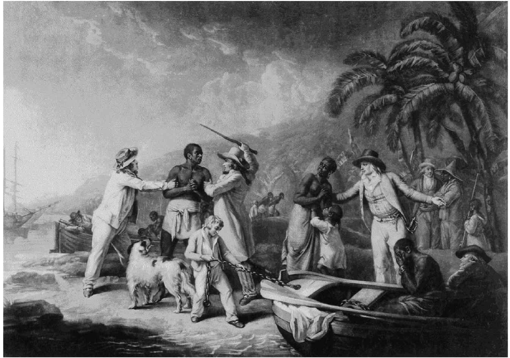
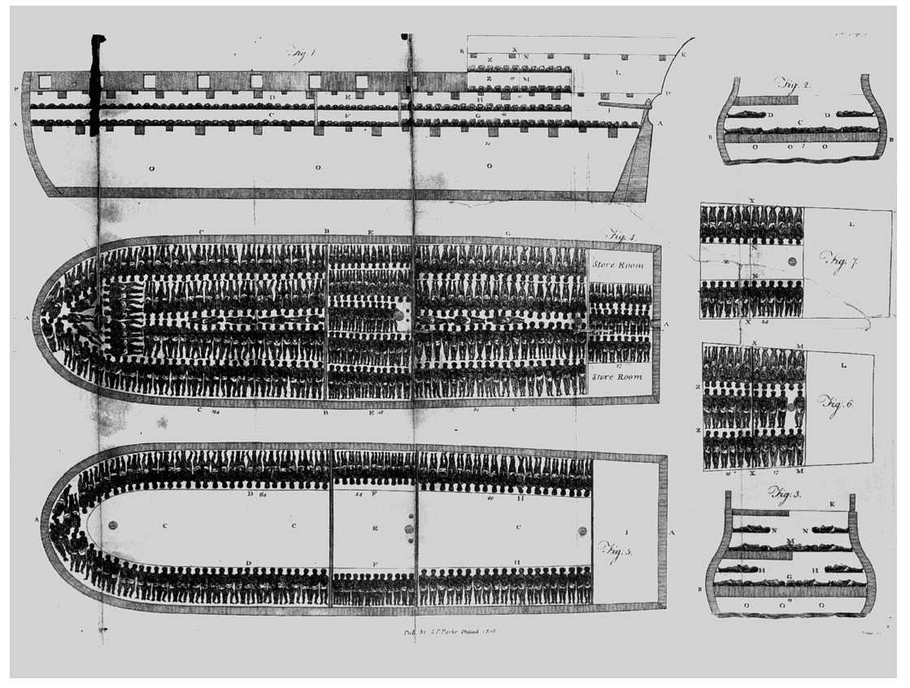

对欧洲人来说，几个世纪以来，非洲最有价值的资源就是奴隶，而这些奴隶在沿海港口便可获得，无须深入内地。奴隶制这时在非洲已是一个成规建制。战俘被迫成为奴隶，债务人或犯有严重罪行的人也沦为奴隶。但是，这些奴隶通常被当作家庭中的一分子，他们享有明确规定的权利，他们的身份也不一定世袭。因此，人们通常认为，与欧洲人组织的跨大西洋的奴隶贸易相比，非洲传统的奴隶制度比较温和。然而，这种说法可能过于离谱。埃德华·雷诺德教授针对这种错觉警告道，他不认为“残酷和非人道的奴役是西方的专利。奴隶制度以其包括剥夺生命在内的极端形式是非洲和西方所共有的……虽然非洲奴隶制度有着不同的起源和影响，但这一事实不应该让我们否定奴隶制度的本质——对人的剥削和征服”[1]。同样不能否定的是，若没有非洲酋长们的参与，整船整船的非洲人也不可能被运到美洲的奴隶种植园；这些酋长围捕自己的非洲同胞，把他们卖给等候在海边的欧洲船长，从而获得可观的利润。

图227 这幅18世纪后期的雕版画表现的是在非洲沿海的欧洲奴隶贩子，图示着痛苦、非人道的奴役过程的第一步。
尽管如此，事实仍然是，欧洲人所进行的跨大西洋奴隶贸易，在数量和特性上都与非洲内部存在的传统奴隶制度完全不同。欧洲的奴隶制度从一开始就主要是经济、而非社会的制度，它在非洲的情况也正是如此。西方的奴隶贩子和奴隶主都是纯粹受经济利益驱动的，他们都准备让奴隶劳作至死，如果这样做比更仁慈地对待他们更有利润的话。当欧洲人开始大规模卷入非洲的奴隶贸易时，种族主义又加强了这种非人格性。也许是出于潜意识的合理化，他们渐渐地开始鄙视黑人，认为他们是天生低劣的人，因而命中注定要为他们的白人主子效劳。潜意识的合理化可能还体现在欧洲人用宗教为奴隶贸易所作的辩护中，他们认为，奴役确保了非洲异教徒转向文明和真正的信仰。
葡萄牙人以这种自鸣得意的精神将成千上万的非洲奴隶用船运回本国。但这只启动奴隶贸易新的重大阶段的一个小小序幕；该阶段始于1510年，当年向美洲大陆运送了第一船非洲奴隶。这次冒险非常成功，因为美洲，尤其是甘蔗种植园，迫切需要劳力。奴隶市场几乎不受限制，其他几个国家也卷入了这一贸易，希图分享厚利。控制奴隶贸易的16世纪时是葡萄牙，17世纪的大部分时间是荷兰，18世纪时则是英国。大约40个欧洲要塞分布在西非沿岸；它们用来防御敌对的贸易国，用来关押等着运过大西洋的奴隶。
奴隶贩子最典型的航线是三角形的。第一段航程是满载货物的船只从本国港口驶向非洲；这些货物有盐、布匹、火器、五金、念珠和朗姆酒等。然后将这些货物换成由非洲当地人从内地运到沿海地区的奴隶。再把这些不幸的受害者装进条件恶劣的船舱，沿着所谓的“中央航路”运过大西洋。在目的地美洲大陆，这些奴隶不是当即被全部售出，就是被圈起来零售。最后一段航程是船只满载种植园的产品如糖、糖浆、烟草、稻米等返回本国。

图228 美国内战之前穿梭于非洲和美洲之间的奴隶贸易船的平面图。
由于贸易风的盛行，“中央航路”的航行通常是速度快、时间短，平均是60天。然而，在这一航行中，奴隶的平均死亡率从10%至55%不等，它取决于旅程的长短、流行病的出现次数和奴隶待遇的好坏。奴隶的待遇几乎都包括难以忍受的拥挤、令人窒息的炎热和糟糕的食物。在此之前，即从内陆到沿海的过程中，奴隶的死亡率甚至更高。突击队为了寻找强壮的青年男女而掠夺村庄、拆散家庭。俘虏们被迫从早到晚在酷热和大雨中赶路；他们穿过茂密的丛林或干燥的平原。到达沿海地区的幸存者则像牛一样一丝不挂地被赶进市场。然后，他们又被烙上公司或买主的名字，赶进要塞，等待着运过大西洋。因此，毫不奇怪，虽然向美洲种植园提供的奴隶在1200万到2000万人之间，但非洲损失的人口据估计却是这一人数的4倍（见第二十五章第三节，关于对非洲的全面影响的部分）。
欧洲人对这些骇人听闻的做法全然不顾，继续买卖非洲人达4个多世纪。由于这样做能获得巨额利润，各大既得利益集团都坚决反对任何控制或废除奴隶贸易的建议。首先，所有的非洲酋长就反对，因为他们用一个强壮的奴隶可换得20到36英镑。这些非洲领导人在奴隶贸易中发挥了至关重要的作用，他们的参与对欧洲人来说是必不可少的，因为欧洲人被限制在沿海地区，并承受着25%到50%的死亡率。非洲经纪人不仅从这种贸易中获得巨额利润，而且也竭力反对所有废除这种贸易的建议。但不管废除奴隶贸易的运动如何，非洲大地上确实发生过反对欧洲人的暴动。确实有少数非洲酋长曾试图阻止对他们同胞的这种可恨贸易，但是，他们没有机会，因为那些继续这种贸易的酋长得到了火器，威胁着少数试图洗手不干的酋长。因此，这些少数持不同意见的酋长陷入了一种无法逃避的困境。
同样，美洲的种植园主，尤其是18世纪在英国议会中占有重要席位的巴巴多斯种植园主，也支持奴隶贸易。另外，欧洲诸既得利益集团，不论是贩奴者还是国内各酒商和产品制造商，都拥护这种奴隶贸易。据估计，英国一年运往非洲的产品价值100万英镑，而欧洲其他国家为了同一目的也运去了同等数量的产品。这一支出所得的利润非常大，因此，18世纪，像利物浦和布里斯托尔这样的城市主要是依靠这一交易繁荣起来的。著名的废奴主义领袖威廉·威尔伯福斯正确地评论道：“利益能给人们的眼睛蒙上一层厚厚的膜，即便双目失明也不过如此。”[2]
尽管存在着这些难以应付的障碍，一小群改革者仍大力从事废奴运动。1787年，他们在英国成立了废除奴隶贸易协会。1823年，为了结束奴隶贸易与奴隶制度，他们又成立了反对奴隶制度协会。工业革命的进步援助了这些废奴主义者，它正在使奴隶制过时。因为不断进步的技术所需要的是海外市场，而不是廉价劳动力的供应。事实上，废奴主义者认为奴隶贸易已经失效，因而坚决认为在非洲能发展起一种更加有利可图的“合法”贸易。
1833年，议会终于通过了一项在英国本土彻底废除奴隶制并向蓄奴者提供2000万英镑赔偿费的法令。英国政府进而说服欧洲其他国家以它为榜样，允许英国军舰截获挂有别国国旗的贩奴船。有一个时期，英国动用了海军四分之一的力量，以配有9000名水兵的56只舰船，在非洲、古巴和巴西沿海巡逻。直到美洲大陆各国逐渐废除奴隶制时——海地、美国和巴西分别于1803年、1863年和1888年废除奴隶制，古巴大约也在1888年废除奴隶制，此后还有一些别的国家相继废除奴隶制——彻底成功才指日可待。
当非洲西海岸的奴隶贸易正被取缔时，在中非和东非，阿拉伯人仍在继续这一贸易，尽管其规模要小得多。远在欧洲人出现之前，阿拉伯人就已开始从事这一贸易，而整个19世纪中，甚至在进入20世纪以后，他们还在进行这一贸易。被俘的奴隶或被迫穿过撒哈拉大沙漠抵达北非市场，或被带到东非沿岸的港口，再由船运往桑给巴尔、马达加斯加、阿拉伯半岛、土耳其、波斯乃至印度。这些奴隶中的许多人都是在印度洋诸岛屿上的丁香种植园和甘蔗种植园中工作。这一贸易比西非沿岸的贸易更难禁止。尽管英国海军在红海和印度洋上巡逻，但这一贸易一直持续到第一次世界大战，甚至第一次世界大战以后。
图229 位于肯尼亚拉姆岛东南海岸边的希拉的星期五清真寺。这一斯瓦希里建筑后期的典型建筑属于19世纪早期的作品。它是当地仅存的一座建于20世纪以前的带尖塔的清真寺。拉姆岛上的斯瓦希里居住区始建于约15世纪，享有一段富庶升平的时期，并在19世纪达到顶峰。